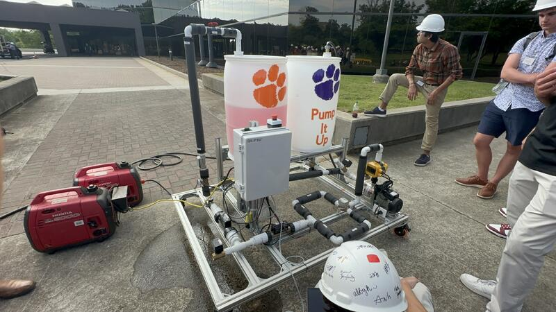
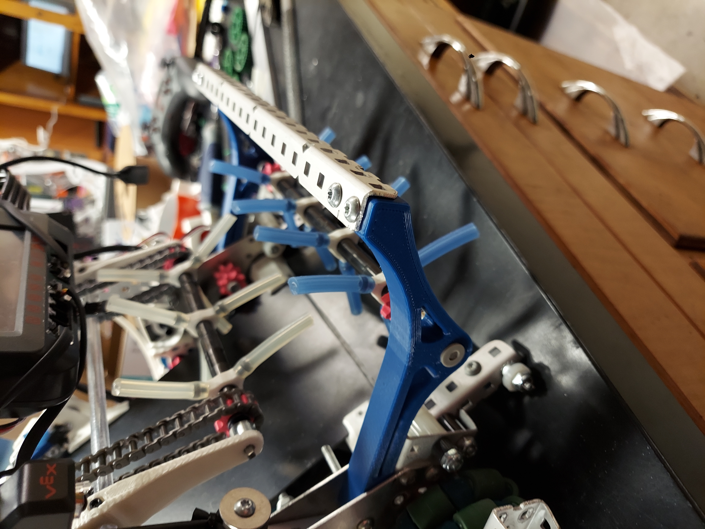
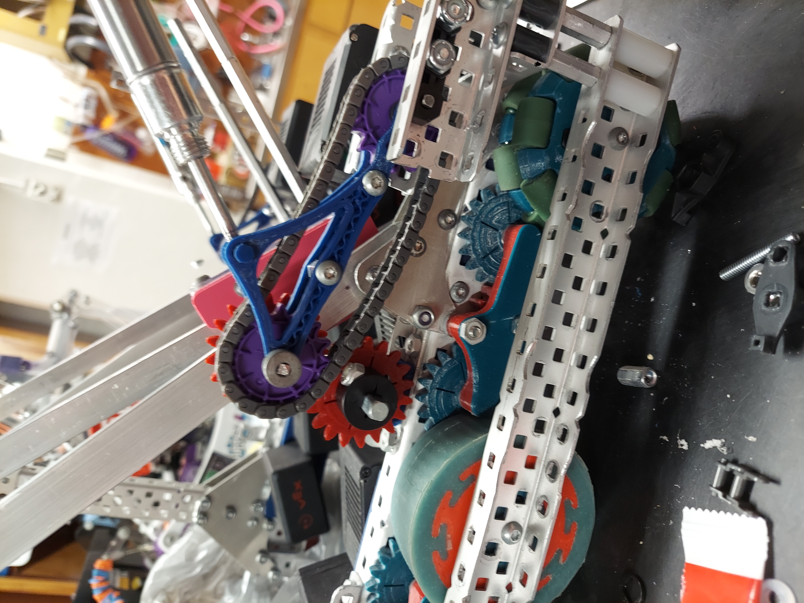
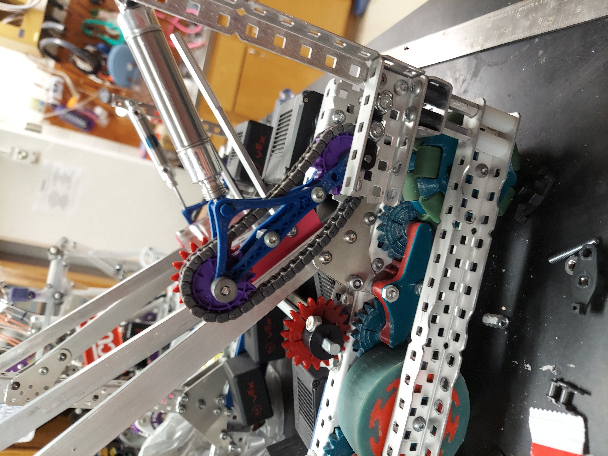
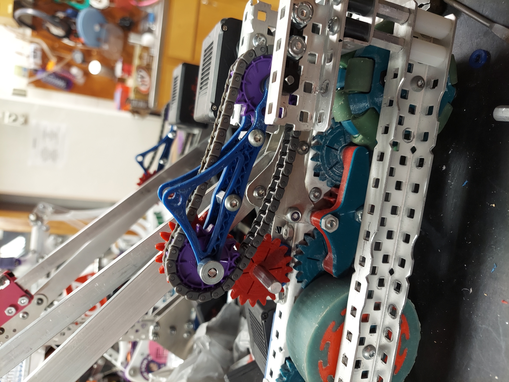
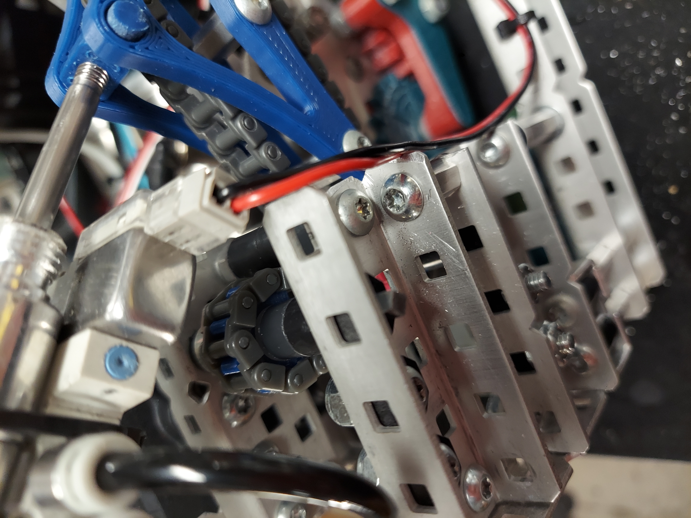
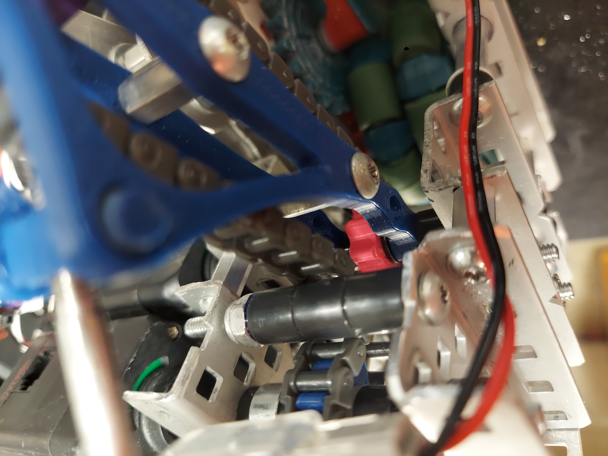
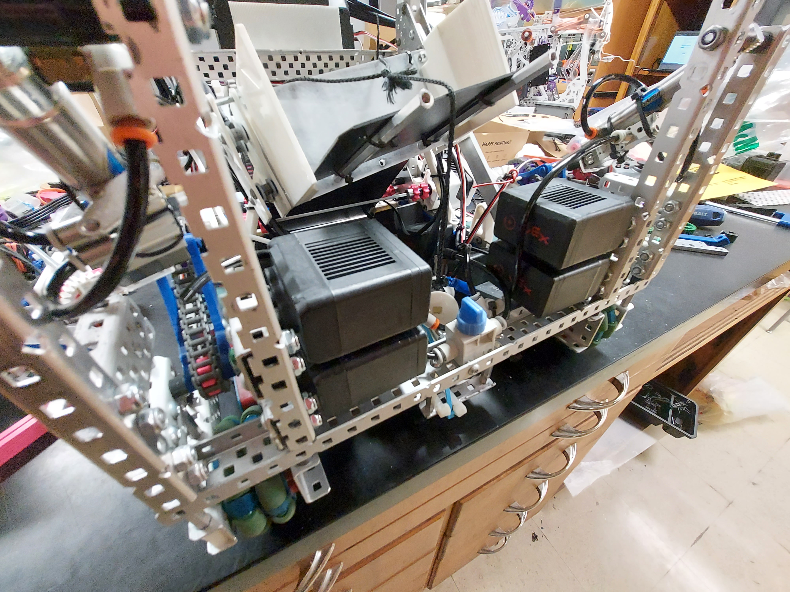

Maze Solver
Maze Solver
ROS2 Autonomous Maze Solver
I spent some time working with a partner on a software package to solve a simple maze. We created a ROS2/Python package to solve the maze by using machine learning and ROS2 NAV2. A simple state machine controlled behaviors and PID controllers enabeled precise movements. Our final submission achieved 90% sign classification accuracy, and was able to complete the maze properly and without error in 5/6 tests.



CIP SkidFluor CIP Skid
I worked with a team of seven other Clemson ME students to design a Clean-In-Place Skid system in partnership with Fluor. I focused heavily on the conceptual design side of the project, doing much of my work in the areas of CAD design and thermodynamic calculations. I also acted as the Group Liason, ensuring useful and professional communcation with the Fluor sponsors and and Clemson advisors. Our final design came in second at a multi university showcase.










VEXU RobotVEXU Robot "Meowth"
This project is my most mechanically advanced project to date. I worked closely with my team and designed this over the course of an entire school year. It includes numerous subsystems, such as the drivetrain, the intake, the linear-launcher, and the winch release. Perhaps the highlight of the build is the winch release system. Conventional slipgear systems would not work, because multiple full revolutions were required to fully retract the linear launcher, so my team came up with a creative solution: a release arm that physically seperated the gears to avoid motor damage. The linear launcher system that my team and I developed gave the robot a near perfect disk grouping that minimized the number of missed disks, and qualified our team for the World Championships. See the VEX Robotics Spin Up game reveal for more information.